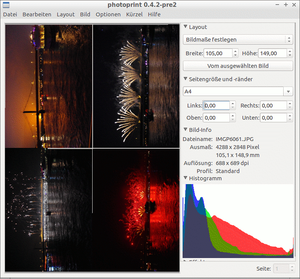
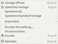

PhotoPrint
Dieser Artikel wurde für die folgenden Ubuntu-Versionen getestet:
Ubuntu 16.04 Xenial Xerus
Ubuntu 14.04 Trusty Tahr
Zum Verständnis dieses Artikels sind folgende Seiten hilfreich:
PhotoPrint  ist ein Programm, mit dem recht einfach Fotos ausgedruckt werden können. Dabei ist es möglich, jeweils bis zu zehn Reihen und Spalten von Bildern auf eine Seite zu drucken. Es können Poster-Ausdrucke über mehrere Seiten erstellt werden, außerdem sind verschiedene Rahmen sowie runde Layouts z.B. für den CD-Druck möglich. Unter bestimmten Umständen ist auch randloser Druck realisierbar, wenn der verwendete Drucker und Druckertreiber diese Option unterstützen.
ist ein Programm, mit dem recht einfach Fotos ausgedruckt werden können. Dabei ist es möglich, jeweils bis zu zehn Reihen und Spalten von Bildern auf eine Seite zu drucken. Es können Poster-Ausdrucke über mehrere Seiten erstellt werden, außerdem sind verschiedene Rahmen sowie runde Layouts z.B. für den CD-Druck möglich. Unter bestimmten Umständen ist auch randloser Druck realisierbar, wenn der verwendete Drucker und Druckertreiber diese Option unterstützen.
Installation¶
PhotoPrint ist in den Paketquellen vorhanden, folgendes Paket muss installiert[1] werden:
photoprint (universe)
 mit apturl
mit apturl
Paketliste zum Kopieren:
sudo apt-get install photoprint
sudo aptitude install photoprint
Manuelle Installation¶
Um die neuste Version zu verwenden, die u.a. eine Vorschau-Funktion und eine ins deutsche übersetzte Oberfläche beinhaltet, den Quell-Code von der Homepage herunterladen, entpacken[2] und kompilieren[3]. Ggf. zuvor im Terminal[4] alle Abhängigkeiten installieren:
Befehl zum Installieren der Build-Abhängigkeiten:
sudo apt-get build-dep photoprint
sudo aptitude build-depends photoprint
Bei der Verwendung von checkinstall ggf. den Namen des Quellcodeverzeichnisses anpassen und den zweiten Bindestrich entfernen.
Nach erfolgreicher Installation findet sich z.B. unter GNOME in "Anwendungen -> Grafik" der Eintrag "PhotoPrint"
Konfiguration¶
PhotoPrint verwendet von Hause aus die CUPS-Gutenprint-Treiber, Version 5.0.0 oder höher; damit ist die Verwendung einer Vielzahl von Druckern möglich. Im Hauptfenster unter "Datei -> Drucker-Einstellung" die "Druckerwarteschlange" des gewünschten Druckers auswählen, darunter das Modell auswählen. Wenn es nicht aufgelistet ist, kann auch "Adobe" und "Post Script Level 2" verwendet werden. Unter "Farbe (Grundeinstellung)" kann es sinnvoll sein, als Farbkorrektur "Unkorrigiert" auszuwählen, da viele Drucker eine "eingebaute" Farbkorrektur verwenden. In den weiteren Reitern können sehr dezidierte Festlegungen zum Farbmanagement vorgenommen werden. Ein englischsprachiges Video-Tutorial zu den Einstellungsmöglichkeiten findet sich auf der Projektseite .
Weitere Programm- und Anzeige-Optionen lassen sich im Reiter "Optionen" festlegen.
Hinweis:
Bei der Verwendung von "Adobe" und "Post Script Level 2" werden die voreingestellten Werte des verwendeten Druckers/Druckerwarteschleife verwendet, nicht die in den PhotoPrint-Settings angegebenen Werte. Das ist ein bekannter Bug im Gutenprint-Treiber bis einschließlich Version 5.2.4.
Verwenden von TurboPrint¶
Um andere als die CUPS-Gutenprint-Treiber zu verwenden (z.B. TurboPrint, um randlose Ausdrucke realisieren zu können) in "Datei -> Drucker-Einstellung -> Ausgabe" die Warteschleife des gewünschten Druckers auswählen, als Modell "Adobe" und "Post Script Level 2" verwenden. Im Reiter "Allgemein" dann bei "PDDFile" den Pfad zur .pdd-Datei des verwendeten Druckers eintragen; diese finden sich für TurboPrint im Verzeichnis /usr/share/turboprint/pdd. Damit werden die Einstellmöglichkeiten des so verwendeten Treibers direkt über das "Allgemein"-Menü einstellbar.
Die erstellte Konfiguration kann als Vorgabe ("Speichere als Standard-Vorgabe") gespeichert werden, es können auch aber verschiedene so festgelegte Vorlagen ("Presets"), z.B. für unterschiedliche Medien/Druckqualitäten, erstellt und später im Reiter "Datei" wieder aufgerufen werden.
Benutzung¶
|  |
| Beispiel für A4 randlos, 2 x 2 Bilder |
Layout¶
Nach dem Aufruf wird im Menü "Layout" festgelegt, welche Art von Ausdruck erfolgen soll. In der Standard-Auswahl "Automatisches Layout" lässt sich festlegen, wie viele Bilder (es lässt sich die exakte Größe des Ausdrucks bestimmen), bzw. wie viele Spalten und Reihen (es sind jeweils bis zu zehn möglich) auf einem Blatt verwendet werde sollen. Auch die Breite der Rahmen zwischen den Bildern ("Zwischenraum") lässt sich festlegen; wer hier einen kleinen Wert wie 0,5 mm angibt, bekommt eine schmale weiße Trennlinie zwischen den Bildern, die das Zerteilen einfacher machen sollte, bei "0,00" werden die Bilder direkt aneinander hängend gedruckt ("randlos").
Für den Posterausdruck ("Poster") lässt sich einstellen, wie groß die einzelnen Teile werden sollen, und aus wie vielen "Einzelteilen" der Gesamtausdruck bestehen soll. Darunter lässt sich festlegen, wie groß die horizontale und vertikale "Überlappung" der Einzelteile zum Zusammenkleben sein soll.
Das Layout "Karussell" erlaubt runde Ausdrucke für den CD/DVD-Druck, die aus sich überlappenden Bildern bestehen. Hier lässt neben der Anzahl der Segmente, dem Überlappungsgrad in Prozent und dem Ausgangswinkel auch die Größe des nicht bedruckbare Innenkreis einer CD/DVD festlegen. Sehr praktisches Layout, um mit CD-tauglichen Druckern eigene Werke zu erstellen.
"Manuelle Größeneinstellung" ermöglicht es, Bilder nach eigenen Vorgaben zu drucken, und dabei die Höhen- bzw. Breitenskalierung auch unabhängig voneinander zu verändern (von kaum sichtbaren kleinen Anpassungen bis hin zu Zerrbildern).
Darunter werden jeweils die Papiergröße und die gewünschten Seitenbreiten festgelegt (für randlosen Ausdruck bis an die Papierkante überall "0,00" eintragen). Für jedes Bild (bei mehreren das gewünschte  -klicken, es können mit
Strg +
A auch alle ausgewählt werden) werden Informationen zur Größe und Auflösung aufgeführt, ebenso wird ein Histogramm des Bildes erstellt. Außerdem lassen sich noch weitere Einstellungen zur Farbsättigung und Farbtemperatur festlegen, ebenso existiert eine einfache Bildschärfungsfunktion.
-klicken, es können mit
Strg +
A auch alle ausgewählt werden) werden Informationen zur Größe und Auflösung aufgeführt, ebenso wird ein Histogramm des Bildes erstellt. Außerdem lassen sich noch weitere Einstellungen zur Farbsättigung und Farbtemperatur festlegen, ebenso existiert eine einfache Bildschärfungsfunktion.
Bilder¶
PhotoPrint unterstützt so gut wie alle Bild-Formate; der Entwickler bittet sogar darum, ihm nicht-darstellbare Dateien zuzusenden, damit er das Problem beheben könne. Insofern kann man fast davon ausgehen, dass eine Bild-Datei, die nicht geladen werden kann, defekt ist.
Die zu druckenden Bilder (es können auch verschiedene Formate gleichzeitig verwendet werden!) werden im Reiter "Bild" ausgewählt, es lassen sich Bilder mehrfach verwenden, auch automatisch für die ganze Seite. Die Bilder können auch direkt per Drag&Drop in das Programmfenster gezogen werden.
Interessant ist die Option "Ermögliche Zuschnitt", die zu einem automatisches Beschneiden der Bilder auf das Seitenverhältnis des vorgegebenen Layouts führt; das ist insbesondere für den randlosen Druck von mehreren Fotos auf einer Seite sinnvoll. Außerdem können damit auch Bilder mit unterschiedliche Seitenverhältnissen in der gleichen Größe ausgegeben werden. Leider lässt sich momentan noch nicht festlegen, welcher Bildausschnitt dabei verwendet wird; das wäre gerade bei größeren Unterschieden der Seitenverhältnisse Bild-Druckmedium sehr sinnvoll (steht aber beim Entwickler schon auf der To-Do-Liste).
Außerdem lassen sich die Bilder drehen; weiterhin können Rahmen hinzugefügt werden (neben den im Programm integrierten lassen sich von der Projektseite weitere mehr oder weniger dekorative Rahmen installieren), sowie bestimmte Farbprofile festgelegt werden.
|  |
| File-Menü |
Ausgabe/Druck¶
Das fertige Layout lässt sich unter "Datei -> Druckvorschau" begutachten. Ein  schaltet in dem sich öffnenden Vollbild zwischen der "tatsächlichen" Größe und einer an den Bildschirm angepassten Version um; auch die Auflösung der Vorschau lässt sich einstellen. Das Menü dazu erscheint, wenn man die Maus an den oberen Bildschirm-Rand fährt, dort lässt sich bei mehrseitigen Aufträgen auch die Seite wechseln. Die Vorschau verlässt man über
Esc oder den "Schließen"-Button im Menü.
schaltet in dem sich öffnenden Vollbild zwischen der "tatsächlichen" Größe und einer an den Bildschirm angepassten Version um; auch die Auflösung der Vorschau lässt sich einstellen. Das Menü dazu erscheint, wenn man die Maus an den oberen Bildschirm-Rand fährt, dort lässt sich bei mehrseitigen Aufträgen auch die Seite wechseln. Die Vorschau verlässt man über
Esc oder den "Schließen"-Button im Menü.
Das Layout kann dann entweder als Bilddatei (im .jpg- oder .tif-Format) exportiert werden, oder aber direkt über den festgelegten Drucker ausgedruckt werden.
Experten-Info:
PhotoPrint lässt sich auch direkt über die Kommandozeile mit den gewünschten Bildern aufrufen:
photoprint BILD1 BILD2...
Außerdem kann zusätzlich mit der Option -b eine Batch-Verarbeitung der gewählten Bilder mit den Standard-Einstellungen erfolgen, ohne dass das Programmfenster dafür geöffnet wird; sinnvoll, wenn Bilder nicht mehr bearbeitet, sondern mit erprobten Einstellungen schnell ausgedruckt werden sollen. Außerdem lässt sich auch eine andere Vorlage verwenden; Aufruf erfolgt mit der Option -p VORLAGEDATEI; die Vorlagen müssen dafür im Verzeichnis ~/.photoprint (ggf. erstellen) abgelegt sein.
Probleme¶
Wenn bei der Verwendung des Gutenprint-Treibers der Ausdruck in Graustufen, statt wie gewünscht in Farbe erfolgt, hilft es ggf., in der Druckerkonfiguration des angesteuerten Druckers ("System -> Systemverwaltung -> Drucken", dort dann im Kontextmenü des verwendeten Druckers "Eigenschaften" aufrufen) bei den Druckereigenschaften ("Printer Properties") in den "Druckeroptionen" in der Sektion "General" als "Color Model" die Auswahl "CMYK" zu verwenden.
Tastenkürzel¶
| PhotoPrint | |
| Taste(n) | Funktion |
| Strg + S | "Datei -> Speichere Vorlage" |
| Strg + O | "Datei -> Vorlage öffnen" |
| Strg + P | "Datei -> Drucke" |
| Strg + Q | "Datei -> Beenden" |
| Strg + A | "Bearbeiten -> Wähle alle aus" |
| Strg + X | "Bearbeiten -> Ausschneiden" |
| Strg + C | "Bearbeiten -> Kopieren" |
| Strg + X | "Bearbeiten -> Einfügen" |
| Strg + K | "Layout -> Leere Layout" |
| Strg + B | "Layout -> Richte Hintergrund ein" |
| Strg + I | "Bild -> Bild hinzufügen" |
Alternativen¶
GNOME Photo Printer - ein einfaches Programm mit verschiedenen vorgegebenen Ausdruck-Größen und einigen Einstellungsmöglichkeiten (randloser Druck ggf. eingeschränkt möglich).
Photo Grid Print
- ein sehr einfaches Programm, um Bilder in Reihen und Spalten auszudrucken; kaum Einstellungsmöglichkeiten (randloses Drucken nur über Veränderung des Quell-Codes, und auch dann zwischen den Bildern nur, wenn die Seitenverhältnisse der Bilder und des Mediums identisch sind).
 Übersichtsartikel
Übersichtsartikel- Erstellt mit Inyoka
-
 2004 – 2017 ubuntuusers.de • Einige Rechte vorbehalten
2004 – 2017 ubuntuusers.de • Einige Rechte vorbehalten
Lizenz • Kontakt • Datenschutz • Impressum • Serverstatus -
Serverhousing gespendet von